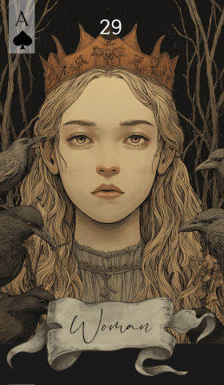

第 29 张 · 黑桃 A
女人
问卜者
阴性影响
伴侣
直觉
在场
女人这张牌承载着阴性、直觉与在场的意味。无论她代表你自己、另一个人，还是局面里的某种阴性影响，她都会把焦点拉回到生活中与人有关、与关系有关的那一面。
免费抽牌 →
女人这张牌承载着阴性、直觉与在场的意味。无论她代表你自己、另一个人，还是局面里的某种阴性影响，她都会把焦点拉回到生活中与人有关、与关系有关的那一面。
免费抽牌 →女人在一次解读中处于中心位置。如果问卜者是女性，她常常就是问卜者本人；否则代表她生活中某位重要的女性。它象征传统上与阴性相连的特质：直觉、共情，以及人与人之间的关系。这张牌把你的注意力引向处在事情核心的某个人，或某种阴性的影响。
除了字面上的指代，女人也说着照料、联结与情感洞察这几层意思。在牌阵里，她是关键人物，她的存在会让周围牌的含义随之转向，指向感情、个人成长或关系的动向。她的出现提醒你调动情绪上的敏锐，留意眼下局面里那些细微的分寸。
在感情与关系里，女人强调某位女性人物的重要性，或关系中偏阴性的那一面。如果这张牌指的是你自己，它说的是你在这段关系里的角色与感受。它也可能指向伴侣或某位带着这些特质的重要之人，突出彼此之间的联结与相互理解。
说到事业，女人可能代表一位女性同事、前辈或领导，她的存在会影响职场的氛围。它也可能提示共情与沟通这类软性能力在你的工作关系中至关重要。她的在场引你去想：人际关系正怎样牵动着你的职业道路。
相信自己的直觉，让共情的那一面带路。女人建议你留意关系与情感上的洞察，理解全局的钥匙就在其中。相信与人深入联结的力量，也相信阴性能量所带来的分寸感。
女人需要周围的牌给出语境，以下是她与牌组中其余各牌的互动：
传统上，女人这张牌画着一位神情安宁、若有所思的女性，透着从容与直觉。她或立或坐，目光常常投向别处，凸显的是内心的世界与情感的分量。这张牌的象征引人去思量自身与关系这两个层面。